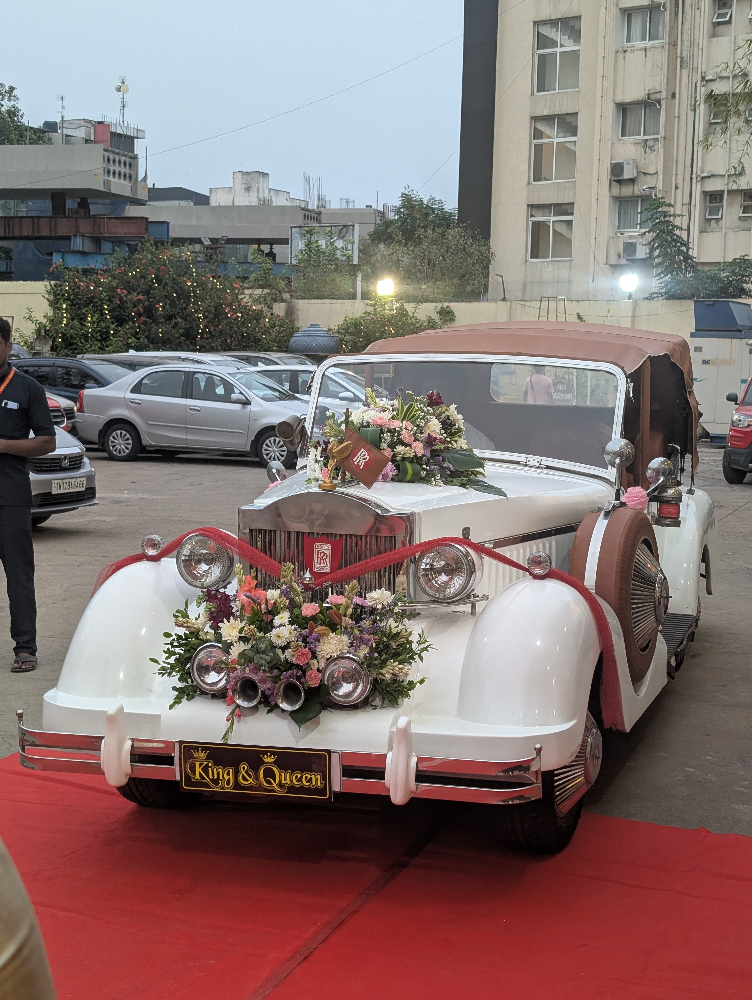
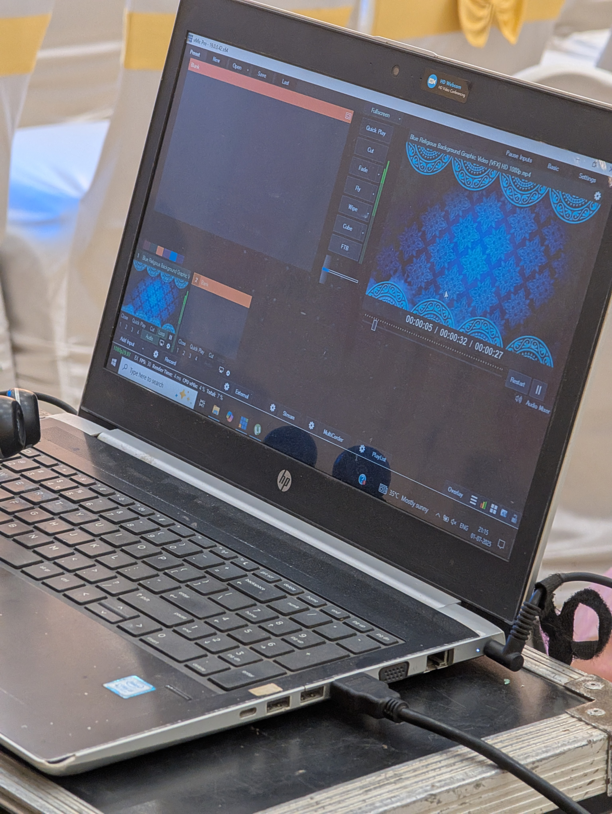

July started off with flying to India. I flew in Lufthansa business class on an A340-300, which is a very old and inefficient plane. Only aircraft with 4 engines and only one deck that's still used. Lost my water bottle on the flight, no idea where it went. India does not pass the waiting 3 feet away from the bag carousel test.
Lipiec rozpoczął się od lotu do Indii. Leciałem klasą biznesową Lufthansy na A340-300, bardzo starym i nieefektywnym samolocie. To jedyny używany obecnie samolot z 4 silnikami i tylko jednym pokładem. Zgubiłem butelkę na wodę podczas lotu, nie mam pojęcia gdzie się podziała. Indie nie zdają testu czekania w odległości 1 metra od taśmy bagażowej.
Stepping out of the airport, there was a soldier armed with an SMG, which was interesting. Then there was the heat and humidity, immediate sensory overload. It was 2 am when I got out of the airport, and I think it was 35°C. Then I video called Srini's dad on my phone so he could talk to the taxi dispatcher for me, and I had someone lead me to where the cars are because I didn't know where to go. The thing is he took my trolley from me and pushed it for me unprompted. Then when we got to the place where the taxis picked you up, he asked me for a tip. I didn't have any cash on me, and I didn't really want to give him a tip, so I refused. He kept asking me for like 3 or 4 minutes in different ways as if I didn't understand, but those 3 or 4 minutes felt like forever.
Po wyjściu z lotniska zobaczyłem żołnierza uzbrojonego w pistolet maszynowy, co było interesujące. Potem uderzyły mnie upał i wilgotność, natychmiastowe przeciążenie zmysłów. Była 2 w nocy, gdy wyszedłem z lotniska, a temperatura wynosiła chyba 35°C. Następnie zadzwoniłem przez wideo do taty Sriniego, żeby porozmawiał za mnie z dyspozytorem taksówek, a ktoś poprowadził mnie do miejsca, skąd odjeżdżały samochody, bo nie wiedziałem dokąd iść. Facet zabrał mi wózek i pchał go bez pytania. Gdy dotarliśmy na miejsce, poprosił mnie o napiwek. Nie miałem przy sobie gotówki i nie chciałem mu dać napiwku, więc odmówiłem. Prosił mnie przez jakieś 3-4 minuty na różne sposoby, jakbym nie rozumiał, ale te 3-4 minuty ciągnęły się w nieskończoność.
The ride to the hotel was interesting, first time witnessing the chaos on the roads in India. On our way there I noticed multiple trucks with a bunch, like 10-15 people just chilling in the back. Some of them asleep, inches away from the edge of the truck bed, on bumpy Indian roads. Driving on the left side of the road of course, well most of the time, because British colony. Tired and half asleep, upset about losing my water bottle, overwhelmed with India and all its craziness. Finally made it to the hotel and got to see Eddie!
Droga do hotelu była ciekawa, po raz pierwszy widziałem chaos na drogach w Indiach. Po drodze zauważyłem kilka ciężarówek z około 10-15 osobami siedzącymi z tyłu. Niektórzy spali kilka centymetrów od krawędzi na wyboistych indyjskich drogach. Jazda oczywiście po lewej stronie drogi, przynajmniej przez większość czasu, ze względu na bycie brytyjską kolonią. Byłem zmęczony, półprzytomny, zmartwiony zgubioną butelką na wodę i przytłoczony szaleństwem Indii. W końcu dotarłem do hotelu i spotkałem się z Eddiem!
The wedding was interesting, I'm glad we had our group of Americans to stick together. It was really hot, all the time, I drank so much water. Unfortunately I used a lot of disposable plastic water bottles because the tap water is NOT safe to drink. For some reason the water bottles were always small, like 200ml. The food was honestly not bad, I was expecting it to be much more difficult to find stuff that was acceptable for my picky appetite. I also was not the least spice tolerant on the trip, not at all. My friends said they were very proud of me for trying my best to eat all the foods.
Wesele było interesujące, cieszę się, że mieliśmy swoją grupę Amerykanów. Cały czas było bardzo gorąco, piłem mnóstwo wody. Niestety używałem wielu jednorazowych plastikowych butelek, ponieważ woda z kranu NIE nadaje się do picia. Z jakiegoś powodu butelki były zawsze małe, około 200 ml. Jedzenie było naprawdę niezłe, spodziewałem się większych problemów ze znalezieniem czegoś odpowiedniego dla mojego wybrednego apetytu. Nie byłem też najmniej odporny na przyprawy, wcale nie. Moi przyjaciele powiedzieli, że są ze mnie bardzo dumni, że próbowałem jeść różne potrawy.
Unfortunately, on the 3rd day, I woke up with a tummy ache. My gut did not appreciate the local cuisine. Traveler's diarrhea, caused by bacteria in the food that's unfamiliar to your body. I skipped the morning activities that day so I could stay close to a toilet. I appreciated the extra sleep I could get in because I still hadn't recovered from arriving so late at night the first day. After taking some medication, I was able to leave the hotel again and continue participating in the activities.
Niestety trzeciego dnia obudziłem się z bólem brzucha. Mój żołądek nie docenił lokalnej kuchni. Biegunka podróżnych spowodowana bakteriami w jedzeniu, których mój organizm nie znał. Opuściłem poranne zajęcia, by być blisko toalety. Doceniłem dodatkowy sen, bo nadal nie odzyskałem sił po późnym przyjeździe pierwszego dnia. Po zażyciu leków mogłem opuścić hotel i kontynuować uczestnictwo w wydarzeniach.
There's definitely aspects of Indian weddings that I like, at least whatever version of traditions I was witnessing. Every part of India has different religion, language, traditions. They had them enter in a procession in the back of an old Rolls Royce, and there were drums and we were all dancing and stuff. Pretty cool. There were also parts during which I was really bored; I got a lot of solitaire in while I was there. Oh and they were running the AV with vMix.
Z pewnością są aspekty indyjskich wesel, które mi się podobają, przynajmniej w wersji tradycji, którą widziałem. Każda część Indii ma inną religię, język i tradycje. Wprowadzili ich w procesji w tylnym siedzeniu starego Rolls Royce'a, a tam były bębny i wszyscy tańczyliśmy i w ogóle. Całkiem fajnie. Były też momenty, w których naprawdę się nudziłem; zagrałem w wiele gier w pasjansa, gdy tam byłem. O, i używali vMix do obsługi AV.
Then the wedding was over, and it was time to go to the airport. It was sad leaving; this was the last time I would see my friends for the next 6 months. My gut was still not happy, which is exactly what you want when you're about to get on a 6-hour-long flight, right? Passport control took forever. They really like their stamps, not only did they stamp my passport but also the ticket itself. Then I got another stamp on my ticket when I was entering the business lounge. At security, I almost forgot to take my duffle bag with me because it got pulled aside for inspection.
Potem wesele się skończyło i nadszedł czas na lotnisko. Było mi smutno, że odchodzę; to był ostatni raz, kiedy zobaczyłem moich przyjaciół przez następne 6 miesięcy. Mój żołądek nadal nie był zadowolony, co jest dokładnie tym, czego chcesz przed 6-godzinnym lotem, prawda? Kontrola paszportowa trwała wieki, a potem na kontroli bezpieczeństwa prawie zapomniałem zabrać ze sobą torbę sportową, ponieważ została odłożona na bok do inspekcji.
Getting a direct flight from Chennai to Auckland is impossible. But, Singapore Airlines flies to Chennai, and I have always wanted to visit Singapore and fly on their airline. So I set aside 3 days in Singapore on my journey around the globe. I flew business class on a A350-900, the ticket wasn't too expensive I think I paid $600 for a 6 hour flight. One of the best business class seats I've ever been in, when the seat is in lie flat mode I can actually fit height wise. Good food of course, great service, I spent my time watching the Clinton episode of Pit Podcast.
Niemożliwe jest bezpośrednie połączenie lotnicze z Chennai do Auckland. Ale Singapore Airlines lata do Chennai, a ja zawsze chciałem odwiedzić Singapur i polecieć ich liniami lotniczymi. Dlatego zarezerwowałem 3 dni w Singapurze podczas mojej podróży dookoła świata. Leciałem klasą biznesową na A350-900, bilet nie był zbyt drogi, chyba zapłaciłem 600 dolarów za 6-godzinny lot. Jedno z najlepszych miejsc w klasie biznesowej, w trybie leżącym mogę się tam zmieścić pod względem wysokości. Oczywiście dobre jedzenie, świetna obsługa, spędziłem czas oglądając odcinek Pit Podcastu z Clintonem.
Arriving in Singapore, I struggled with the eGates because glasses. Singapore passes the bag carousel test, and the keep left on the escalator test. Very good society, well organized, people are considerate to others, America could learn a thing or two. I was staying a hostel, first time in a hostel. It was kinda weird that we had to take off our shoes before entering the living space. Then my room was also interesting, this was a pod capsule hotel so each room has a bunk bed. One side of the bunk bed is blocked off on your side, and the other bed is blocked off on the other side. So it's like you're sharing a bunk bed with someone but still have your own room. Very innovated, I liked it.
Po przyjeździe do Singapuru miałem problemy z bramkami eGates z powodu okularów. Singapur zdaje test taśmy bagażowej i test trzymania lewej strony na schodach ruchomych. Bardzo dobre społeczeństwo, dobrze zorganizowane, ludzie są uprzejmi wobec innych, Ameryka mogłaby się czegoś nauczyć. Mieszkałem w hostelu, pierwszy raz w hostelu. Było trochę dziwne, że musieliśmy zdjąć buty przed wejściem do przestrzeni mieszkalnej. Mój pokój był też interesujący, to był kapsułowy hotel podwójny, więc każdy pokój ma łóżko piętrowe. Jedna strona łóżka piętrowego jest zablokowana po twojej stronie, a drugie łóżko jest zablokowane po drugiej stronie. Więc to tak, jakbyś dzielił łóżko piętrowe z kimś, ale nadal masz swój własny pokój. Bardzo innowacyjne, podobało mi się.
The first night I went to a hawker center, which is like a food court but with street food. I had fish and chip, it was suprisingly cheap. Usually while traveling alone food is a big struggle because I don't like eating fastfood, but going into a restaurant by myself is awkward (I've done it a few times though). No problem here, there's plenty of casual food spots where you can just walk in and order food. Then after eating I took the MRT to the Gardens by the Bay, was cool seeing the fake tree shaped things lit up in the night. It was also hot and humid here like in India, but I was used to it at this point. I walked back to the hostel, and then spent the rest of the night reorganizing my suitcases and doing laundry.
Pierwszej nocy poszedłem do hawker center, które jest jak food court, ale z jedzeniem ulicznym. Zjadłem rybę z frytkami, było to zaskakująco tanie. Zwykle podczas podróży samodzielnie jedzenie jest dużym problemem, ponieważ nie lubię jeść fast foodów, ale chodzenie do restauracji samemu jest niezręczne (chociaż kilka razy to robiłem). Tutaj nie ma problemu, jest mnóstwo miejsc z jedzeniem casualowym, gdzie można po prostu wejść i zamówić jedzenie. Po jedzeniu wsiadłem do MRT i pojechałem do Ogrodów nad Zatoką, było fajnie zobaczyć te sztuczne drzewopodobne rzeczy oświetlone w nocy. Tutaj też było gorąco i wilgotno jak w Indiach, ale byłem już do tego przyzwyczajony. Wróciłem pieszo do hostelu, a potem spędziłem resztę nocy reorganizując walizki i robiąc pranie.
The second day I explored the city, went to Fort Canning Park, which is a historical site. It was a British fort during the colonial times, and it was used to defend Singapore from the Japanese during World War II. Then I went to Marina Bay Sands and explored the mall there, they have a floating Apple Store, which I visited despite my dislike for Apple. They have a giant whirlpool in the middle of the mall, which has a hole in the bottom that goes down into the interior of the mall. I also went to the ArtScience Museum, which is in a interesting building that looks like a flower. The museum had an exhibition on the human brain, which I really loved. I read all the signs and watched all the videos. Unfortunately there was a bunch of children running around being loud. I got a tarot card.
Drugiego dnia zwiedzałem miasto, poszedłem do Fort Canning Park, który jest miejscem historycznym. To był brytyjski fort w czasach kolonialnych, używany do obrony Singapuru przed Japończykami podczas II wojny światowej. Potem poszedłem do Marina Bay Sands i zwiedziłem tamtejsze centrum handlowe, mają pływający sklep Apple, który odwiedziłem mimo mojego niechęci do Apple. Mają ogromny wir wodny w środku centrum handlowego, który ma dziurę na dole prowadzącą do wnętrza centrum handlowego. Poszedłem też do Muzeum Sztuki i Nauki, które znajduje się w interesującym budynku przypominającym kwiat. Muzeum miało wystawę na temat ludzkiego mózgu, którą bardzo polubiłem. Przeczytałem wszystkie napisy i obejrzałem wszystkie filmy. Niestety było tam dużo dzieci biegających i hałasujących. Dostałem kartę tarota.

The other exhibit there was really weird, I didn't understand it at all. It was a bunch of screens with a bunch of random stuff on them, and you could interact with them by touching the screens and moving elements around. I didn't really get it, but I guess it was supposed to be some kind of art. As you can see I'm far more interested in the science than the art part of ArtScience. The final exhibit was a bunch of exotic dresses. It was cool, but my gut was still not happy from India, so I had to leave early.
Inna wystawa była naprawdę dziwna, w ogóle jej nie rozumiałem. To były ekrany z różnymi losowymi rzeczami na nich, i można było wchodzić z nimi w interakcję dotykając ekranów i przesuwając elementy. Nie do końca to rozumiałem, ale chyba miało to być jakieś dzieło sztuki. Jak widać, jestem znacznie bardziej zainteresowany nauką niż sztuką w Muzeum Sztuki i Nauki. Ostatnia wystawa to były egzotyczne sukienki. Było fajnie, ale mój żołądek nadal nie był zadowolony po Indiach, więc musiałem wyjść wcześniej.
What's interesting about the mall there, is that there's practically no where to sit down and rest your legs. I guess they don't want you to sit around and not buy anything. I had to go to the food court to find a place to sit down, and I got this hot cast iron plate with rice and steak. It was great, I wish we had these kinds of restaraunts in the US or like NZ. I also got a, what's that smelly fruit, durian, I got a durian ice cream. It... it was ok, I guess. The aftertaste was horrible, it was on my breath even the next morning.
Co ciekawe, w tym centrum handlowym praktycznie nie ma gdzie usiąść i odpocząć nogi. Chyba nie chcą, żebyś siedział i nic nie kupował. Musiałem iść do food courtu, żeby znaleźć miejsce do siedzenia, i zamówiłem gorącą patelnię żeliwną z ryżem i stekiem. Było świetnie, chciałbym, żebyśmy mieli takie restauracje w USA lub Nowej Zelandii. Kupiłem też lody durianowe... to... było ok, chyba. Posmak był okropny, czułem go na oddechu nawet następnego ranka.
I finished the day by watching the fountain light show, very impressive, and then going to the top of the hotel. The views were impressive, and I finally had somewhere to sit down and rest. I wanted to buy a Singapore Sling, but I didn't really want to have alcohol, or pay $20 for a drink.
Dzień zakończyłem oglądając pokaz świetlny fontanny, bardzo imponujące, a potem poszedłem na szczyt hotelu. Widoki były imponujące, i w końcu miałem gdzie usiąść i odpocząć. Chciałem kupić Singapore Sling, ale nie chciałem pić alkoholu ani płacić 20 dolarów za drinka.

The last day the plan was to hike up a mountain, the southern ridge trail. But I did not want to embark on such a trip with my diahrreoa, but Singapore did not have Pepto-Bismol. Instead I got Po Chai Pills, which are a Chinese herbal medicine. I was skeptical, but they actually worked suprisingly well. The hike was nice, there's a bridge there with a kind of cove that catches the wind. Very useful in the heat and humidity.
Ostatniego dnia plan był, żeby wspiąć się na górę, szlak południowej grani. Ale nie chciałem wyruszać na taką wyprawę z moją biegunką, a Singapur nie miał Pepto-Bismolu. Zamiast tego kupiłem Po Chai Pills, chińskie ziołowe lekarstwo. Byłem sceptyczny, ale naprawdę działały zaskakująco dobrze. Wędrówka była miła, jest tam most z rodzajem zatoki, która łapie wiatr. Bardzo przydatne w upale i wilgotności.
Then I took the cable car to Sentosa Island, it was very pretty there, A little too touristy for my taste. But, I went to a beach and entered the water which felt sooooo good. The sand was really large grains which felt nice on my feet after having walked so far, and the water cooled me off well. I also saw an island that had a sign saying it was the southernmost point of continental Asia, so obviously I went and took a picture with the sign. Strangely though when you look at the map, it looks like it's not actually the southernmost point, but I guess close enough. The actual southernmost point has a private house on it.
Potem wziąłem kolejkę linową na Wyspę Sentosa, było tam bardzo ładnie, trochę za turystycznie jak dla mnie. Ale poszedłem na plażę i wszedłem do wody, co było bardzo przyjemne. Piasek miał naprawdę duże ziarna, co było miłe dla moich stóp po długim spacerze, a woda dobrze mnie ochłodziła. Zobaczyłem też wyspę z tabliczką mówiącą, że to najdalej na południe wysunięty punkt Azji kontynentalnej, więc oczywiście poszedłem i zrobiłem sobie zdjęcie z tabliczką. Dziwne jednak, że gdy patrzysz na mapę, wygląda na to, że to nie jest faktycznie najdalej na południe wysunięty punkt, ale chyba wystarczająco blisko. Faktyczny najdalej na południe wysunięty punkt ma prywatny dom.

The next day I went to the airport, I went really early because the airport has a lot of stuff to do. I had an episode of Pit Podcast I had to watch for QA and then render, so I spent some time doing that. I also went to the Uniqlo because I'm addicted to their clothing. I spent way too much money there. Then it was time to finally check in, so I went through that. Struggled at the eGate again, because I tried exiting with my US passport, but I had entered with my Polish passport. What's interesting about Changi is the security is not at the enterance to the terminal, it's at the enterance to the gate.
Następnego dnia poszedłem na lotnisko, poszedłem bardzo wcześnie, bo lotnisko ma dużo rzeczy do zrobienia. Miałem odcinek Pit Podcastu do obejrzenia i zrenderowania, więc spędziłem trochę czasu na tym. Poszedłem też do Uniqlo, bo jestem uzależniony od ich ubrań. Wydałem tam zdecydowanie za dużo pieniędzy. Potem nadszedł czas na odprawę, więc przeszedłem przez to. Znowu miałem problemy z eGate, bo próbowałem wyjść z amerykańskim paszportem, ale wszedłem z polskim paszportem. Co ciekawe w Changi kontrola bezpieczeństwa nie jest przy wejściu do terminalu, tylko przy wejściu do bramki.
I got a blister on the bottom of my foot from all the walking I did in Singapore, but I did a big brain move and wrapped a piece of gauze from my first aid kit around it. I stopped by the butterfly garden, which I guess was interesting. I found a seat with a great view of the runway and watched planes land. Lot's of A380s, then I saw my plane, a Air NZ 777-300, which was going to take me to Auckland. I was flying in premium economy, because I had run out of money at the point in the trip.
Dostałem pęcherza na spodzie stopy od całego chodzenia po Singapurze, ale zrobiłem sprytny ruch i owinąłem kawałek gazy z mojego zestawu pierwszej pomocy wokół niego. Zatrzymałem się w ogrodzie motyli, który, jak sądzę, był interesujący. Znalazłem miejsce z doskonałym widokiem na pas startowy i obserwowałem lądowanie samolotów. Dużo A380, a potem zobaczyłem mój samolot, Air NZ 777-300, który miał mnie zabrać do Auckland. Leciałem w klasie premium economy, ponieważ w tym momencie podróży skończyły mi się pieniądze.
My seatmate was a Indian woman who was traveling to Wellington for some government business. She was really annoying, she didn't know how the seat worked, or like that you can't have anything on the floor because we had bulkhead seats. Also, hilariously when we had service it turned out she did not pre-order the vegetarian meal, and then tried blaming the flight attendant for not having a vegetarian meal for her. Then near the end of the flight the FA handed out arrival cards to all the people who didn't fill out the electronic decleration, guess who didn't do that. She then started asking me a bunch of questions about filling out said arrival card. Really impressive how these people manage to go through life, and then become government officials.
Moja towarzyszka w fotelu była indyjską kobietą, która podróżowała do Wellington w sprawach rządowych. Była naprawdę irytująca, nie wiedziała jak działa fotel, ani że nie można mieć nic na podłodze, bo mieliśmy miejsca przy ścianie. Co więcej, zabawne było to, że gdy mieliśmy serwis, okazało się, że nie zamówiła wegetariańskiego posiłku i próbowała obwiniać stewardesę za brak wegetariańskiego posiłku dla niej. Potem pod koniec lotu stewardesa rozdała karty przybycia wszystkim osobom, które nie wypełniły elektronicznego oświadczenia, zgadnij kto tego nie zrobił. Potem zaczęła zadawać mi mnóstwo pytań dotyczących wypełniania tej karty przybycia. Naprawdę imponujące, jak ci ludzie radzą sobie w życiu i potem zostają urzędnikami rządowymi.
... To be continued
... Ciąg dalszy nastąpi